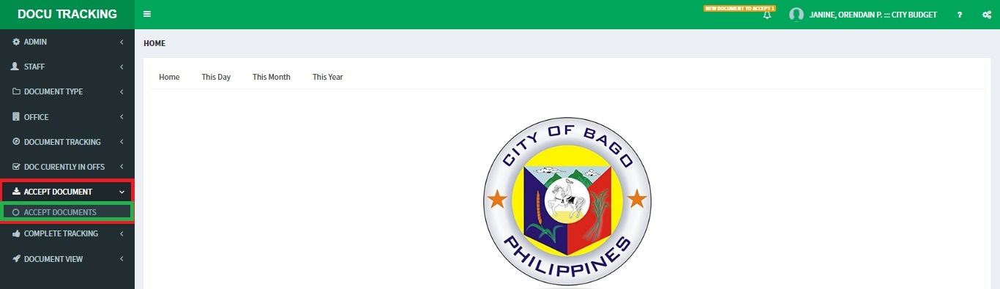
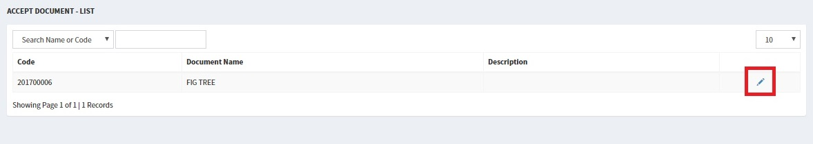
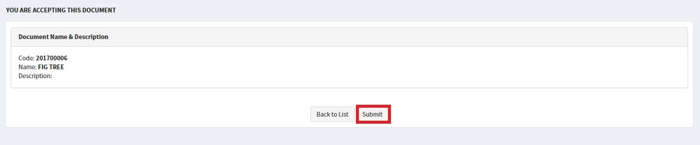
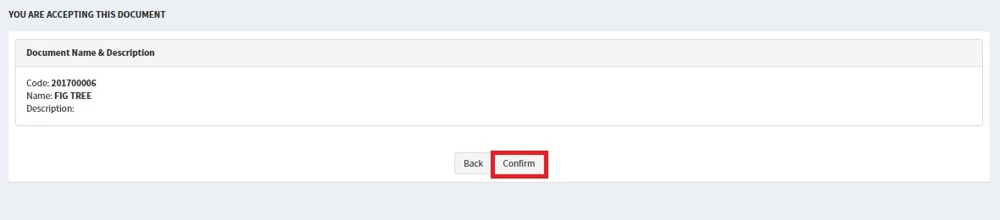
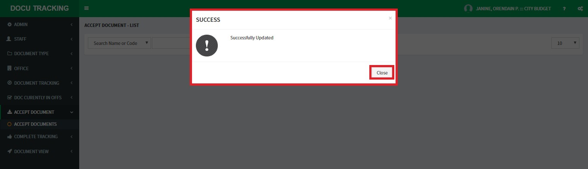

ACCEPT DOCUMENT
1. In the left side of your screen you can see there a list of options which is called the Side Bar Menu click ACCEPT DOCUMENT then click ACCEPT DOCUMENT LIST.

2. In the right side of the list displayed click the PENCIL ICON to accept the DOCUMENT TRACKING being forwarded by other Offices.

3. In this window you could see the DOCUMENT PROPERTIES and click SUBMIT.

4. and click CONFIRM.

4. a notification window will pop out confirming actions you made.
